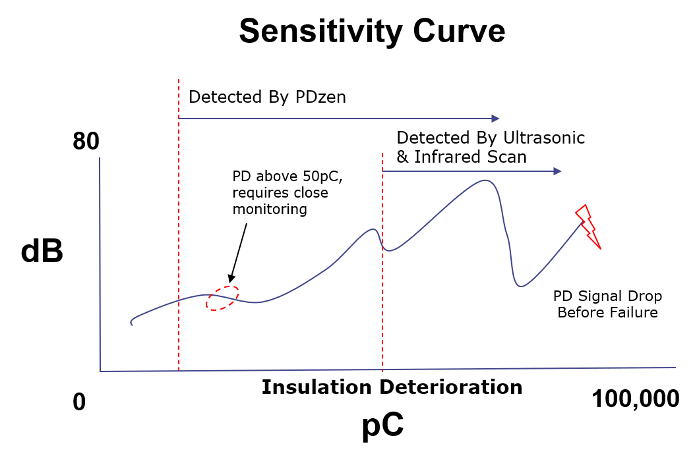

Comparison with Other Techniques
The graph presents a comparison between periodic diagnostic techniques used for medium voltage (MV) and high voltage (HV) equipment—such as acoustic and ultrasonic testing, SF₆ dew point and quality assessments, impurity checks, dissolved gas analysis (DGA), and offline partial discharge (PD) testing—versus continuous 24/7 online PD monitoring. Unlike periodic assessments, which provide snapshots of equipment condition at specific intervals, online PD monitoring enables real-time detection of insulation deterioration. Since PD activity tends to escalate over time, continuous monitoring is particularly critical for extra-high voltage (EHV) equipment, where insulation failure can lead to accelerated degradation and potential breakdown.
Back to Info